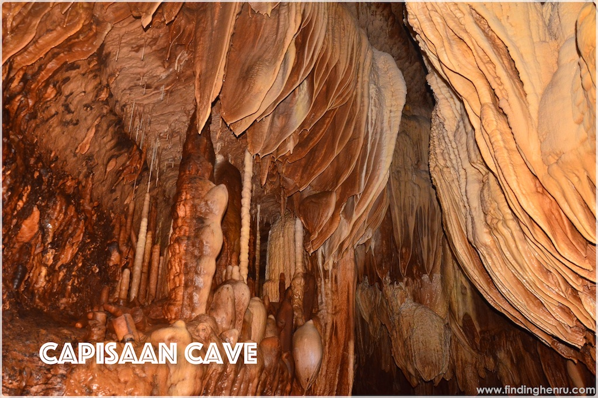

Home
About Us
Destinations
Contact Us

Capisaan Cave system
Located in Capisaan, Kasibu, Nueva Vizcaya
Capisaan Cave
is located in Barangays Capisaan and Alayan in Kasibu, Nueva Vizcaya. It is the fifth longest cave system in the country and ranked among the best. It is considered as a geologist’s paradise. The subterranean river in this cave has a length of 4.2 kilometers from the Lion Entrance (named as such because the rock looks like an image of a lion). It is a bit like the cave of Puerto Princesa Underground River which is 70% filled with water. There, you can find rare kinds of calcite formations. It has chambers and tunnels that have unique stalagmites, stalactites, rock formations, and other speleothems.